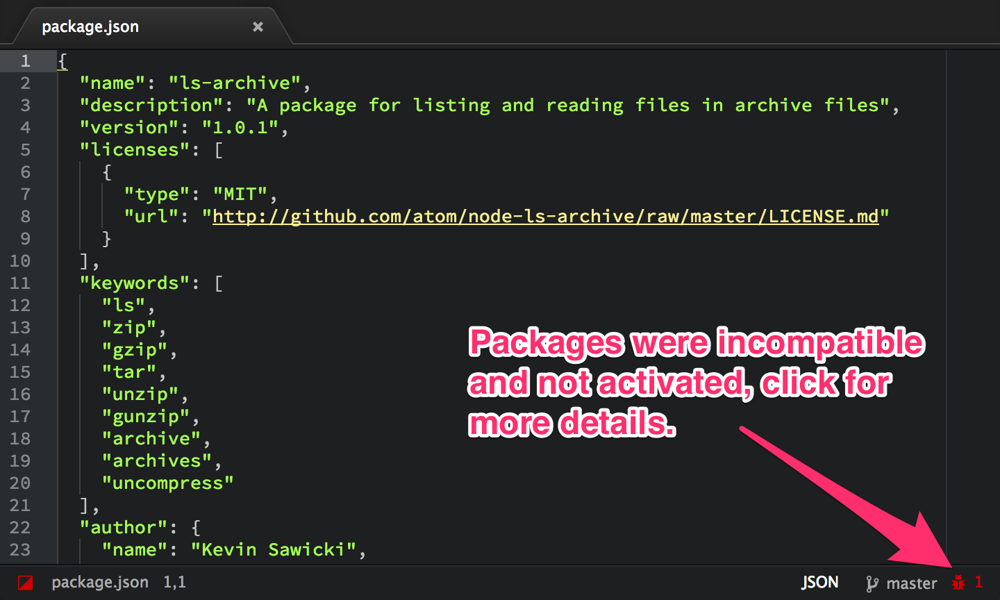
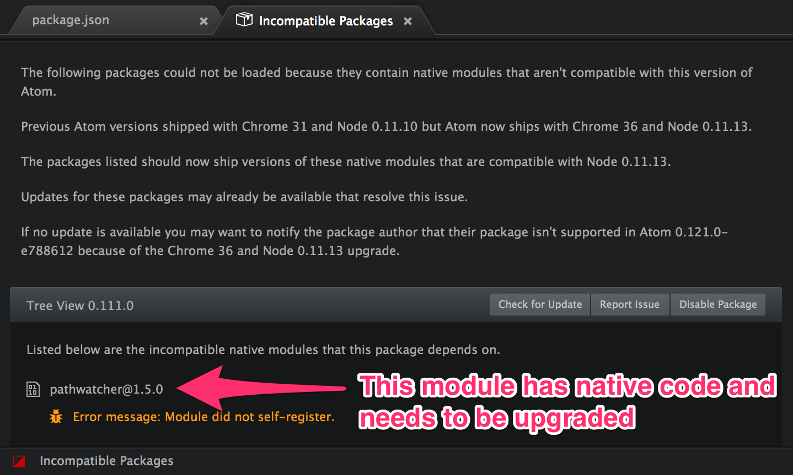

Chrome 36 and Node 0.11.13
August 13, 2014 kevinsawicki
Tweet
We are happy to announce that starting with today’s 0.121 release, Atom now runs on Chrome 36 and Node 0.11.13.
Atom is built on top of Atom Shell which started shipping with these upgraded Chrome and Node versions in the 0.15 release. Atom had previously been running on Chrome 31 and Node 0.11.10 since upgrading to Atom Shell 0.8.5 last January.
This upgrades brings Atom up to date with the latest features and bug fixes
from both amazing projects. The Chrome upgrade greatly improves the
developer tools with all the new features added in
Chrome 33 and Chrome 35 and also adds support for
JavaScript Promises. The Node upgrade improves the performance
of both path.join and fs.stat which Atom core and packages heavily use.
Upgrading Atom Packages
This upgrade may require your Atom packages to upgrade their dependencies to versions compatible with Node 0.11.13. This will only impact dependencies with native code that need to be upgraded and rebuilt against the new version of v8 that now ships with Atom. For most native modules this should be as simple as upgrading to nan 1.2.0 or above.
In order to make this transition as smooth as possible, Atom now ships with a new package that notifies you of any incompatible packages and tells you which modules they use that need to be upgraded. Shown below is the new incompatible-packages package which displays which packages failed to load and which native modules need to be upgraded.


This information is cached in localStorage by package name/version in order to
have a minimal impact on startup time. If you are working on upgrading
the packages you develop you can run the Incompatible Packages: Clear Cache
command from the Command Palette to force a recheck of all
the installed and linked packages on the next Atom launch.
Hopefully this package upgrade will go smoothly and we are looking into ways to prevent this type of breakage when upgrading the Chrome, Node, and v8 versions in the future. Please let us know if you run into any problems by opening an issue on atom/atom.